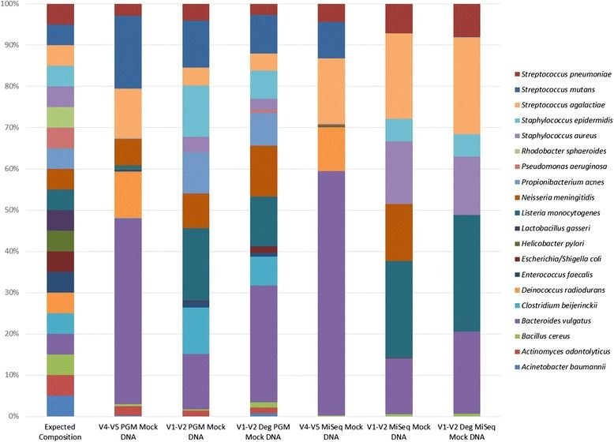

Because this tutorial consists of many steps, we have made two versions of it, one long and one short.
This is the extended version. We will run every tool manually and discuss the results in detail.
If you would like to run through the tutorial a bit quicker and use workflows to run groups of
analysis steps (e.g. data cleaning) at once, please see the shorter version of this tutorial
You can also switch between the long and short version at the start of any section.
Your results may be slightly different from the ones presented in this tutorial due to differing versions of tools, reference data, external databases, or because of stochastic processes in the algorithms.
Obtaining and preparing data
In this tutorial we use 16S rRNA data, but similar pipelines can be used for WGS data.
Comment: Background: The 16S ribosomal RNA gene
The 16S rRNA gene has several properties that make it ideally suited for our purposes
Present in all prokaryotes
Highly conserved + highly variable regions
Huge reference databases
The highly conserved regions make it easy to target the gene across different organisms,
while the highly variable regions allow us to distinguish between different species.
“The Schloss lab is interested in understanding the effect of normal variation in the gut microbiome on host health. To that end,
we collected fresh feces from mice on a daily basis for 365 days post weaning. During the first 150 days post weaning (dpw),
nothing was done to our mice except allow them to eat, get fat, and be merry. We were curious whether the rapid change in
weight observed during the first 10 dpw affected the stability microbiome compared to the microbiome observed between days
140 and 150.”
To speed up analysis for this tutorial, we will use only a subset of this data. We will look at a single mouse at 10 different
time points (5 early, 5 late). In order to assess the error rate of the analysis pipeline and experimental setup, the Schloss lab
additionally sequenced a mock community with a known composition (genomic DNA from 21 bacterial strains). The sequences used
for this mock sample are contained in the file HMP_MOCK.v35.fasta
Comment: Dataset naming scheme
For this tutorial, you are given 10 pairs of files. For example, the following pair of files: F3D0_S188_L001_R1_001.fastq F3D0_S188_L001_R2_001.fastq
The first part of the file name indicates the sample; F3D0 here signifies that this sample was obtained from Female 3 on Day 0.
The rest of the file name is identical, except for _R1 and _R2, this is used to indicate the forward and reverse reads
respectively.
Importing the data into Galaxy
Now that we know what our input data is, let’s get it into our Galaxy history:
All data required for this tutorial has been made available from Zenodo
Hands-on: Obtaining our data
Make sure you have an empty analysis history. Give it a name.
Click the new-history icon at the top of the history panel.
If the new-history is missing:
Click on the galaxy-gear icon (History options) on the top of the history panel
Select the option Create New from the menu
Import Sample Data.
Import the sample FASTQ files to your history, either from a shared data library (if available), or from Zenodo
using the URLs listed in the box below (click param-repeat to expand):
Now that’s a lot of files to manage. Luckily Galaxy can make life a bit easier by allowing us to create
dataset collections. This enables us to easily run tools on multiple datasets at once.
Since we have paired-end data, each sample consist of two separate fastq files, one containing the
forward reads, and one containing the reverse reads. We can recognize the pairing from the file names,
which will differ only by _R1 or _R2 in the filename. We can tell Galaxy about this paired naming
convention, so that our tools will know which files belong together. We do this by building a List of Dataset Pairs
Hands-on: Organizing our data into a paired collection
Click on the checkmark iconparam-check at top of your history.
Select all the FASTQ files (40 in total)
Tip: type fastq in the search bar at the top of your history to filter only the FASTQ files; you can now use the All button at the top instead of having to individually select all 40 input files.
Click on for all selected..
Select Build List of Dataset Pairs from the dropdown menu
In the next dialog window you can create the list of pairs. By default Galaxy will look for pairs
of files that differ only by a _1 and _2 part in their names. In our case however, these
should be _R1 and _R2.
Click on “Choose Filters” and select Forward: _R1, Reverse: _R2 (note that you can also enter Filters manually in the text fields on the top)
You should now see a list of pairs suggested by Galaxy:
Click on Auto-pair to create the suggested pairs.
Or click on “Pair these datasets” manually for every pair that looks correct.
Name the pairs
The middle segment is the name for each pair.
These names will be used as sample names in the downstream analysis, so always make sure they are informative!
Make sure that param-checkRemove file extensions is checked
Check that the pairs are named F3D0-F3D9, F3D141-F3D150 and Mock.
Note: The names should not have the .fastq extension
If needed, the names can be edited manually by clicking on them
Name your collection at the bottom right of the screen
You can pick whatever name makes sense to you
Click the Create Collection button.
A new dataset collection item will now appear in your history
Before starting any analysis, it is always a good idea to assess the quality of your input data and improve it
where possible by trimming and filtering reads. The mothur toolsuite contains several tools to assist with this task.
We will begin by merging our reads into contigs, followed by filtering and trimming of reads based on quality score
and several other metrics.
Create contigs from paired-end reads
In this experiment, paired-end sequencing of the ~253 bp V4 region of the 16S rRNA gene was performed.
The sequencing was done from either end of each fragment. Because the reads are about 250 bp in length, this results in a
significant overlap between the forward and reverse reads in each pair. We will combine these pairs of reads into contigs.
The Make.contigs tool creates the contigs, and uses the paired collection as input. Make.contigs
will look at each pair, take the reverse complement reverse read, and then determine the overlap between the
two sequences. Where an overlapping base call differs between the two reads, the quality score is used to determine
the consensus base call. A new quality score is derived by combining the two original quality scores in both of
the reads for all the overlapping positions.
Hands-on: Combine forward and reverse reads into contigs
Make.contigsTool: toolshed.g2.bx.psu.edu/repos/iuc/mothur_make_contigs/mothur_make_contigs/1.39.5.1 with the following parameters
param-select“Way to provide files”: Multiple pairs - Combo mode
param-collection“Fastq pairs”: the collection you just created
Leave all other parameters to the default settings
This step combined the forward and reverse reads for each sample, and also combined
the resulting contigs from all samples into a single file. So we have gone from a paired
collection of 20x2 FASTQ files, to a single FASTA file. In order to retain information about
which reads originated from which samples, the tool also output a group file. View that
file now, it should look something like this:
Almost all of the reads are between 248 and 253 bases long.
2,5% or more of our reads had ambiguous base calls (Ambigs column).
The longest read in the dataset is 502 bases.
There are 152,360 sequences.
Our region of interest, the V4 region of the 16S gene, is only around 250 bases long. Any reads significantly longer than this expected value likely did not
assemble well in the Make.contigs step. Furthermore, we see that 2,5% of our reads had between 6 and 249
ambiguous base calls (Ambigs column). In the next steps we will clean up our data by removing these
problematic reads.
We do this data cleaning using the Screen.seqs tool, which removes
sequences with ambiguous bases (maxambig) and
contigs longer than a given threshold (maxlength).
Hands-on: Filter reads based on quality and length
Screen.seqsTool: toolshed.g2.bx.psu.edu/repos/iuc/mothur_screen_seqs/mothur_screen_seqs/1.39.5.1 with the following parameters
param-file“fasta”: the trim.contigs.fasta file created by Make.contigstool
param-file“group”: the group file created in the Make.contigstool step
“maxlength”: 275
“maxambig”: 0
Question
How many reads were removed in this screening step? (Hint: run the summary.seqs tool again)
23,488.
This can be determined by looking at the number of lines in bad.accnos output of screen.seqs
or by comparing the total number of seqs between of the summary log before and after this screening
step
Optimize files for computation
Microbiome samples typically contain a large numbers of the same organism, and therefore we expect
to find many identical sequences in our data. In order to speed up computation, we first determine
the unique reads, and then record how many times each of these different reads was observed in
the original dataset. We do this by using the Unique.seqs tool.
Hands-on: Remove duplicate sequences
Unique.seqsTool: toolshed.g2.bx.psu.edu/repos/iuc/mothur_unique_seqs/mothur_unique_seqs/1.39.5.0 with the following parameters
param-file“fasta”: the good.fasta output from Screen.seqstool
“output format”: Name File
Question
How many sequences were unique? How many duplicates were removed?
16,426 unique sequences and 112,446 duplicates.
This can be determined from the number of lines in the fasta (or names) output, compared to the
number of lines in the fasta file before this step.
Here we see that this step has greatly reduced the size of our sequence file; not only will this speed up further computational
steps, it will also greatly reduce the amount of disk space (and your Galaxy quota) needed to store all the intermediate files generated during
this analysis. This Unique.seqs tool created two files, one is a FASTA file containing only the unique sequences,
and the second is a so-called names file. This names file consists of two columns, the first contains the sequence names
for each of the unique sequences, and the second column contains all other sequence names that are identical to the representative
sequence in the first column.
name representatives
read_name1 read_name2,read_name,read_name5,read_name11
read_name4 read_name6,read_name,read_name10
read_name7 read_name8
...
To recap, we now have the following files:
a FASTA file containing every distinct sequence in our dataset (the representative sequences)
a names file containing the list of duplicate sequences
a group file containing information about the samples each read originated from
To further reduce file sizes and streamline analysis, we can use the Count.seqs tool to combine
the group file and the names file into a single count table.
Hands-on: Generate count table
Count.seqsTool: toolshed.g2.bx.psu.edu/repos/iuc/mothur_count_seqs/mothur_count_seqs/1.39.5.0 with the following parameters
param-file“name”: the names output from Unique.seqstool
“Use a Group file”: yes
param-file“group”: the group file we created using the Screen.seqstool
Have a look at the count_table output from the Count.seqstool, it summarizes the number of times each unique sequence was observed across each of the samples. It will look something like this:
The first column contains the read names of the representative sequences, and the subsequent columns contain
the number of duplicates of this sequence observed in each sample.
Comment: Representative sequences vs Total sequences
From now on, we will only work with the set of unique sequences, but it’s important to remember that these represent a larger
number of total sequences, which we keep track of in the count table.
In the following we will use the unique sequences together with the count table as input to tools instead of the complete set of sequences. If this is done for the Summary.seqstool tool it will
report both the number of unique representative sequences as well as the total sequences they represent.
We are now ready to align our sequences to the reference alignment. This is an important
step to improve the clustering of your OTUs Schloss 2012.
In mothur this is done by determining for each unique sequence the entry of the reference database that
has the most k-mers in common (i.e. the most substring of fixed length k). For the reference sequence
with the most common k-mers and the unique sequence a standard global sequence alignment is computed
(using the Needleman-Wunsch algorithm).
Hands-on: Align sequences
Align.seqsTool: toolshed.g2.bx.psu.edu/repos/iuc/mothur_align_seqs/mothur_align_seqs/1.39.5.0 with the following parameters
param-file“fasta”: the fasta output from Unique.seqstool
param-file“reference”: silva.v4.fasta reference file from your history
Question
Have a look at the alignment output, what do you see?
At first glance, it might look like there is not much information there. We see our read names, but only period . characters below it.
This is because the V4 region is located further down our reference database and nothing aligns to the start of it. If you scroll to right you will start seeing some more informative bits:
.....T-------AC---GG-AG-GAT------------
Here we start seeing how our sequences align to the reference database.
There are different alignment characters in this output:
.: terminal gap character (before the first or after the last base in our query sequence)
-: gap character within the query sequence
We will cut out only the V4 region in a later step (Filter.seqstool)
Summary.seqsTool: toolshed.g2.bx.psu.edu/repos/iuc/mothur_summary_seqs/mothur_summary_seqs/1.39.5.0 with the following parameters:
param-file“fasta”: the align output from Align.seqstool
param-file“count”: count_table output from Count.seqstool
The Start and End columns tell us that the majority of reads aligned between positions 1968 and 11550,
which is what we expect to find given the reference file we used. However, some reads align to very different positions,
which could indicate insertions or deletions at the terminal ends of the alignments or other complicating factors.
Also notice the Polymer column in the output table. This indicates the average homopolymer length. Since we know that
our reference database does not contain any homopolymer stretches longer than 8 reads, any reads containing such
long stretches are likely the result of PCR errors and we would be wise to remove them.
Next we will clean our data further by removing poorly aligned sequences and any sequences with long
homopolymer stretches.
More Data Cleaning
To ensure that all our reads overlap our region of interest, we will:
Remove any reads not overlapping the region V4 region (position 1968 to 11550) using Screen.seqstool.
Remove any overhang on either end of the V4 region to ensure our sequences overlap only the V4 region, using Filter.seqstool.
Clean our alignment file by removing any columns that have a gap character (-, or . for terminal gaps) at that position in every sequence (also using Filter.seqstool).
Remove redundancy in the aligned sequences that might have been introduced by filtering columns by running Unique.seqs once more.
Group near-identical sequences together with Pre.clustertool. Sequences that only differ by one or two bases at this point are likely to represent sequencing errors rather than true biological variation, so we will cluster such sequences together.
Hands-on: Remove poorly aligned sequences
Screen.seqsTool: toolshed.g2.bx.psu.edu/repos/iuc/mothur_screen_seqs/mothur_screen_seqs/1.39.5.1 with the following parameters
param-file“fasta”: the aligned fasta file from Align.seqstool
“start”: 1968
“end”: 11550
“maxhomop”: 8
param-file“count”: the count table file from Count.seqstool
Note: we supply the count table so that it can be updated for the sequences we’re removing.
Question
How many sequences were removed in this step?
128 sequences were removed. This is the number of lines in the bad.accnos output.
Next, we will remove any overhang on either side of the V4 region, and
Filter.seqsTool: toolshed.g2.bx.psu.edu/repos/iuc/mothur_filter_seqs/mothur_filter_seqs/1.39.5.0 with the following parameters
param-file“fasta”: good.fasta output from the latest Screen.seqstool
“vertical”: yes
“trump”: .
“Output logfile”: yes
Your resulting alignment (filtered fasta output) should look something like this:
These are all our representative reads again, now with additional alignment information.
In the log file of the Filter.seqs step we see the following additional information:
Length of filtered alignment: 376
Number of columns removed: 13049
Length of the original alignment: 13425
Number of sequences used to construct filter: 16298
From this log file we see that while our initial alignment was 13425 positions wide, after filtering the overhangs
(trump parameter) and removing positions that had a gap in every aligned read (vertical parameter), we have
trimmed our alignment down to a length of 376.
Because any filtering step we perform might lead to sequences no longer being unique, we deduplicate our data by re-running
the Unique.seqs tool:
Hands-on: Re-obtain unique sequences
Unique.seqsTool: toolshed.g2.bx.psu.edu/repos/iuc/mothur_unique_seqs/mothur_unique_seqs/1.39.5.0 with the following parameters
param-file“fasta”: the filtered fasta output from Filter.seqstool
param-file“name file or count table”: the count table from the last Screen.seqstool
Question
How many duplicate sequences did our filter step produce?
3: The number of unique sequences was reduced from 16298 to 16295
Pre-clustering
The next step in cleaning our data, is to merge near-identical sequences together. Sequences that only differ
by around 1 in every 100 bases are likely to represent sequencing errors, not true biological variation. Because
our contigs are ~250 bp long, we will set the threshold to 2 mismatches.
Hands-on: Perform preliminary clustering of sequences
Pre.clusterTool: toolshed.g2.bx.psu.edu/repos/iuc/mothur_pre_cluster/mothur_pre_cluster/1.39.5.0 with the following parameters
param-file“fasta”: the fasta output from the last Unique.seqstool run
param-file“name file or count table”: the count table from the last Unique.seqstool
“diffs”: 2
Question
How many unique sequences are we left with after this clustering of highly similar sequences?
5720: This is the number of lines in the fasta output
Chimera Removal
We have now thoroughly cleaned our data and removed as much sequencing error as we can. Next, we will look
at a class of sequencing artefacts known as chimeras.
During PCR amplification, it is possible that two unrelated templates are combined to form a sort of hybrid sequence,
also called a chimera. Needless to say, we do not want such sequencing artefacts confounding our results. We’ll do
this chimera removal using the VSEARCH algorithm Rognes et al. 2016 that is called within mothur, using the
Chimera.vsearchtool tool.
This command will split the data by sample and check for chimeras. The recommended
way of doing this is to use the abundant sequences as our reference.
Hands-on: Remove chimeric sequences
Chimera.vsearchTool: toolshed.g2.bx.psu.edu/repos/iuc/mothur_chimera_vsearch/mothur_chimera_vsearch/1.39.5.1 with the following parameters
param-file“fasta”: the fasta output from Pre.clustertool
param-file“count”: the count table from the last Pre.clustertool
param-check “dereplicate” to Yes
Running Chimera.vsearch with the count file will remove the chimeric sequences from the count table, but we
still need to remove those sequences from the fasta file as well. We do this using Remove.seqs:
Remove.seqsTool: toolshed.g2.bx.psu.edu/repos/iuc/mothur_remove_seqs/mothur_remove_seqs/1.39.5.0 with the following parameters
param-file“accnos”: the vsearch.accnos file from Chimera.vsearchtool
param-file“fasta”: the fasta output from Pre.clustertool
param-file“count”: the count table from Chimera.vsearchtool
Question
How many sequences were flagged as chimeric? what is the percentage? (Hint: summary.seqs)
Looking at the chimera.vsearch accnos output, we see that 3,439 representative sequences were flagged as chimeric. If we run summary.seqs on the resulting fasta file and count table, we see that we went from 128,655
sequences down to 118,091 total sequences in this step, for a reduction of 10,564 total sequences, or 8.2%. This is a reasonable number of
sequences to be flagged as chimeric.
Now that we have thoroughly cleaned our data, we are finally ready to assign a taxonomy to our sequences.
We will do this using a Bayesian classifier (via the Classify.seqstool tool) and a mothur-formatted training
set provided by the Schloss lab based on the RDP (Ribosomal Database Project, Cole et al. 2013) reference taxonomy.
Background: Taxonomic assignment
In this tutorial we will use the RDP classifier and reference taxonomy for classification, but there are several different taxonomic
assignment algorithms and reference databases available for this purpose.
An overview of different methods is given by Liu et al. 2008 and shown below:
The choice of taxonomic classifier and reference taxonomy can impact downstream results. The figure from Liu et al. 2008
given below shows the taxonomic composition determined when using different classifiers and reference taxonomies, for different primer sets (16S regions).
Figure: Compositions at the phylum level for each of the three datasets: (a) Guerrero Negro mat, (b) Human gut and (c) Mouse gut, using a range of different methods (separate subpanels within each group). The x-axis of each graph shows region sequenced. The y-axis shows abundance as a fraction of the total number of sequences in the community. The legend shows colors for phyla (consistent across graphs).
Which reference taxonomy is best for your experiments depends on a number of factors such as the type of sample and variable region sequenced.
Another discussion about how these different databases compare was described by Balvočiūtė and Huson 2017.
Removal of non-bacterial sequences
Despite all we have done to improve data quality, there may still be more to do:
there may be 18S rRNA gene fragments or 16S rRNA from Archaea, chloroplasts, and mitochondria
that have survived all the cleaning steps up to this point. We are generally not interested in these sequences
and want to remove them from our dataset.
Hands-on: Taxonomic Classification and Removal of undesired sequences
Classify.seqsTool: toolshed.g2.bx.psu.edu/repos/iuc/mothur_classify_seqs/mothur_classify_seqs/1.39.5.0 with the following parameters
param-file“fasta”: the fasta output from Remove.seqstool
param-file“reference”: trainset9032012.pds.fasta from your history
param-file“taxonomy”: trainset9032012.pds.tax from your history
param-file“count”: the count table file from Remove.seqstool
Have a look at the taxonomy output. You will see that every read now has a classification.
Now that everything is classified we want to remove our undesirables. We do this with the Remove.lineage
tool:
Remove.lineageTool: toolshed.g2.bx.psu.edu/repos/iuc/mothur_remove_lineage/mothur_remove_lineage/1.39.5.0 with the following parameters
param-file“taxonomy”: the taxonomy output from Classify.seqstool
param-text“taxon - Manually select taxons for filtering”: Chloroplast-Mitochondria-unknown-Archaea-Eukaryota
param-file“fasta”: the fasta output from Remove.seqstool
param-file“count”: the count table from Remove.seqstool
Question
How many unique (representative) sequences were removed in this step?
How many sequences in total?
20 representative sequences were removed.
The fasta file output from Remove.seqs had 2281 sequences while the fasta output from Remove.lineages
contained 2261 sequences.
162 total sequences were removed.
If you run summary.seqs with the count table, you will see that we now have 2261 unique sequences
representing a total of 117,929 total sequences (down from 118,091 before). This means 162 of our
sequences were in represented by these 20 representative sequences.
The data is now as clean as we can get it. In the next section we will use the Mock sample to assess how accurate
our sequencing and bioinformatics pipeline is.
Optional: Calculate error rates based on our mock community
The mock community analysis is optional. If you are low on time or want to skip ahead, you can jump straight to the next section
where we will cluster our sequences into OTUs, classify them and perform some visualisations.
If you wish to skip the mock community analysis, you can go directly to the next section and continue with the analysis.
The following step is only possible if you have co-sequenced a mock community with your samples. A mock community is a sample
of which you know the exact composition and is something we recommend to do, because it will give you an idea of how
accurate your sequencing and analysis protocol is.
Comment: Background: Mock communities
What is a mock community?
A mock community is an artificially constructed sample; a defined mixture of microbial cells and/or
viruses or nucleic acid molecules created in vitro to simulate the composition of a microbiome
sample or the nucleic acid isolated therefrom.
Why sequence a mock community?
In a mock community, we know exactly which sequences/organisms we expect to find, and at which proportions.
Therefore, we can use such an artificial sample to assess the error rates of our sequencing and
analysis pipeline.
Did we miss any of the sequences we know to be present in the sample (false negatives)?
Do we find any sequences that were not present in the sample (false positives)?
Were we able to accurately detect their relative abundances?
If our workflow performed well on the mock sample, we have more confidence in the accuracy of the
results on the rest of our samples.
Example
As an example, consider the following image from Fouhy et al Fouhy et al. 2016.
A mock community sample was sequenced for different combinations of sequencer and primer sets (V-regions).
Since we know the expected outcome, we can assess the accuracy of each pipeline. A similar approach can be used to
assess different parameter settings of the in-silico analysis pipeline.
Figure 1: Example of usage of a mock community to assess accuracy. On the left is the expected result given that we know the exact composition of the mock sample. This was then used to assess the accuracy of different combinations of sequencing platform and primer set (choice of V-region)
Further reading
Next generation sequencing data of a defined microbial mock community Singer et al. 2016
16S rRNA gene sequencing of mock microbial populations- impact of DNA extraction method, primer choice and sequencing platform Fouhy et al. 2016
The mock community in this experiment was composed of genomic DNA from 21 bacterial strains. So in a perfect world, this is
exactly what we would expect the analysis to produce as a result.
First, let’s extract the sequences belonging to our mock samples from our data:
Hands-on: extract mock sample from our dataset
Get.groupsTool: toolshed.g2.bx.psu.edu/repos/iuc/mothur_get_groups/mothur_get_groups/1.39.5.0 with the following parameters
param-file“group file or count table”: the count table from Remove.lineagetool
param-select“groups”: Mock
param-file“fasta”: fasta output from Remove.lineagetool
param-check“output logfile?”: yes
In the log file we see the following:
Selected 58 sequences from your fasta file.
Selected 4046 sequences from your count file
The Mock sample has 58 unique sequences, representing a total of 4,046 total sequences.
The Seq.error tool measures the error rates using our mock reference. Here we align
the reads from our mock sample back to their known sequences, to see how many fail to match.
Hands-on: Assess error rates based on a mock community
Seq.errorTool: toolshed.g2.bx.psu.edu/repos/iuc/mothur_seq_error/mothur_seq_error/1.39.5.0 with the following parameters
param-file“fasta”: the fasta output from Get.groupstool
param-file“reference”: HMP_MOCK.v35.fasta file from your history
param-file“count”: the count table from Get.groupstool
That is pretty good! The error rate is only 0.0065%! This gives us confidence that the rest of the samples
are also of high quality, and we can continue with our analysis.
Cluster mock sequences into OTUs
We will now estimate the accuracy of our sequencing and analysis pipeline by clustering the Mock sequences into OTUs,
and comparing the results with the expected outcome.
For this a distance matrix is calculated (i.e. the distances between all pairs of sequences). From this distance matrix
a clustering is derived using the OptiClust algorithm:
OptiClust starts with a random OTU clustering
Then iteratively sequences are moved to all other OTUs or new clusters and the option is chosen that improved the mathews correlation coefficient (MCC)
Step 2 is repeated until the MCC converges
Background: What are Operational Taxonomic Units (OTUs)?
In 16S metagenomics approaches, OTUs are clusters of similar sequence variants of the 16S rDNA marker gene
sequence. Each of these clusters is intended to represent a taxonomic unit of a bacteria species or genus
depending on the sequence similarity threshold. Typically, OTU cluster are defined by a 97% identity
threshold of the 16S gene sequence variants at species level. 98% or 99% identity is suggested for strain
separation.
(Image credit: Danzeisen et al. 2013, 10.7717/peerj.237)
Hands-on: Cluster mock sequences into OTUs
First we calculate the pairwise distances between our sequences
Dist.seqsTool: toolshed.g2.bx.psu.edu/repos/iuc/mothur_dist_seqs/mothur_dist_seqs/1.39.5.0 with the following parameters
param-file“fasta”: the fasta from Get.groupstool
“cutoff”: 0.20
Next we group sequences into OTUs
Cluster - Assign sequences to OTUsTool: toolshed.g2.bx.psu.edu/repos/iuc/mothur_cluster/mothur_cluster/1.39.5.0 with the following parameters
param-file“column”: the dist output from Dist.seqstool
param-file“count”: the count table from Get.groupstool
Now we make a shared file that summarizes all our data into one handy table
Make.sharedTool: toolshed.g2.bx.psu.edu/repos/iuc/mothur_make_shared/mothur_make_shared/1.39.5.0 with the following parameters
param-file“list”: the OTU list from Clustertool
param-file“count”: the count table from Get.groupstool
“label”: 0.03 (this indicates we are interested in the clustering at a 97% identity threshold)
And now we generate intra-sample rarefaction curves
Rarefaction.singleTool: toolshed.g2.bx.psu.edu/repos/iuc/mothur_rarefaction_single/mothur_rarefaction_single/1.39.5.0 with the following parameters
param-file“shared”: the shared file from Make.sharedtool
Question
How many OTUs were identified in our mock community?
Answer: 34
This can be determined by opening the shared file or OTU list and looking at the header line. You will see a column for each OTU
Open the rarefaction output (dataset named sobs inside the rarefaction curves output collection), it should look
something like this:
When we use the full set of 4060 sequences, we find 34 OTUs from the Mock community; and with
3000 sequences, we find about 31 OTUs. In an ideal world, we would find exactly 21 OTUs. Despite our
best efforts, some chimeras or other contaminations may have slipped through our filtering steps.
Background: Rarefaction
To estimate the fraction of species sequenced, rarefaction curves are typically used. A rarefaction curve
plots the number of species as a function of the number of individuals sampled. The curve usually begins
with a steep slope, which at some point begins to flatten as fewer species are being discovered per sample:
the gentler the slope, the less contribution of the sampling to the total number of operational taxonomic
units or OTUs.
Green, most or all species have been sampled; blue, this habitat has not been exhaustively sampled; red,
species rich habitat, only a small fraction has been sampled.
In this tutorial we will continue with an OTU-based approach, for the phylotype and phylogenic
approaches, please refer to the mothur wiki page.
Background: What are Operational Taxonomic Units (OTUs)?
In 16S metagenomics approaches, OTUs are clusters of similar sequence variants of the 16S rDNA marker gene
sequence. Each of these clusters is intended to represent a taxonomic unit of a bacteria species or genus
depending on the sequence similarity threshold. Typically, OTU cluster are defined by a 97% identity
threshold of the 16S gene sequence variants at species level. 98% or 99% identity is suggested for strain
separation.
(Image credit: Danzeisen et al. 2013, 10.7717/peerj.237)
Remove Mock Sample
Now that we have cleaned up our data set as best we can, and assured ourselves of the quality of our sequencing
pipeline by considering a mock sample, we are almost ready to cluster and classify our real data. But
before we start, we should first remove the Mock dataset from our data, as we no longer need it. We do this using
the Remove.groups tool:
Hands-on: Remove Mock community from our dataset
Remove.groupsTool: toolshed.g2.bx.psu.edu/repos/iuc/mothur_remove_groups/mothur_remove_groups/1.39.5.0 with the following parameters
param-select“Select input type”: fasta , name, taxonomy, or list with a group file or count table
param-file“group or count table”: the pick.count_table output from Remove.lineagetool
param-select“groups”: Mock
param-file“fasta”: the pick.fasta output from Remove.lineagetool
param-file“taxonomy”: the pick.taxonomy output from Remove.lineagetool
Cluster sequences into OTUs
There are several ways we can perform clustering. For the Mock community, we used the traditional approach of
using the Dist.seqs and Cluster tools. Alternatively, we can also use the Cluster.split tool. With
this approach, the sequences are split into bins, and then clustered with each bin. Taxonomic information is used to guide this process.
The Schloss lab have published results showing that if you split at the level of Order or Family, and cluster to a 0.03
cutoff, you’ll get just as good of clustering as you would with the “traditional” approach. In addition, this approach
is less computationally expensive and can be parallelized, which is especially advantageous when you have large
datasets.
We’ll now use the Cluster tool, with taxlevel set to 4, requesting that clustering be done at the Order level.
Hands-on: Cluster our data into OTUs
Cluster.splitTool: toolshed.g2.bx.psu.edu/repos/iuc/mothur_cluster_split/mothur_cluster_split/1.39.5.0 with the following parameters
“Split by”: Classification using fasta
param-file“fasta”: the fasta output from Remove.groupstool
param-file“taxonomy”: the taxonomy output from Remove.groupstool
param-file“name file or count table”: the count table output from Remove.groupstool
“taxlevel”: 4
“cutoff”: 0.03
Next we want to know how many sequences are in each OTU from each group and we can do this using the
Make.shared tool. Here we tell mothur that we’re really only interested in the 0.03 cutoff level:
Make.sharedTool: toolshed.g2.bx.psu.edu/repos/iuc/mothur_make_shared/mothur_make_shared/1.39.5.0 with the following parameters
param-file“list”: the list output from Cluster.splittool
param-file“count”: the count table from Remove.groupstool
“label”: 0.03
We probably also want to know the taxonomy for each of our OTUs. We can get the consensus taxonomy for each
OTU using the Classify.otu tool:
Classify.otuTool: toolshed.g2.bx.psu.edu/repos/iuc/mothur_classify_otu/mothur_classify_otu/1.39.5.0 with the following parameters
param-file“list”: the list output from Cluster.splittool
param-file“count”: the count table from Remove.groupstool
param-file“taxonomy”: the taxonomy output from Remove.groupstool
“label”: 0.03
Examine galaxy-eye the taxonomy output of Classify.otutool. This is a collection, and the different levels of taxonomy are shown in the names of the collection elements. In this example we only calculated one level, 0.03. This means we used a 97% similarity threshold. This threshold is commonly used to differentiate at species level.
Opening the taxonomy output for level 0.03 (meaning 97% similarity, or species level) shows a file structured like the following:
The first line shown in the snippet above indicates that Otu008 occurred 5260 times, and that all of the
sequences (100%) were binned in the genus Alistipes.
Question
Which samples contained sequences belonging to an OTU classified as Staphylococcus?
Examine the tax.summary file output by Classify.otutool.
Samples F3D141, F3D142, F3D144, F3D145, F3D2. This answer can be found by
examining the tax.summary output and finding the columns with nonzero
values for the line of Staphylococcus
Before we continue, let’s remind ourselves what we set out to do. Our original question was about the stability of
the microbiome and whether we could observe any change in community structure between the early and late samples.
Because some of our sample may contain more sequences than others, it is generally a good idea to normalize the
dataset by subsampling.
Hands-on: Subsampling
First we want to see how many sequences we have in each sample. We’ll do this with the
Count.groups tool:
Count.groupsTool: toolshed.g2.bx.psu.edu/repos/iuc/mothur_count_groups/mothur_count_groups/1.39.5.0 with the following parameters
param-file“shared”: the shared file from Make.sharedtool
Question
How many sequences did the smallest sample consist of?
The smallest sample is F3D143, and consists of 2389 sequences. This is a reasonable number, so we will now subsample all the other samples down to this level.
Sub.sampleTool: toolshed.g2.bx.psu.edu/repos/iuc/mothur_sub_sample/mothur_sub_sample/1.39.5.0 with the following parameters
“Select type of data to subsample”: OTU Shared
param-file“shared”: the shared file from Make.sharedtool
“size”: 2389
Question
What would you expect the result of count.groups on this new shared output collection to be? Check if you are correct.
all groups (samples) should now have 2389 sequences. Run count.groups again on the shared output collection by the sub.sample
tool to confirm that this is indeed what happened.
Note: since subsampling is a stochastic process, your results from any tools using this subsampled data
will deviate from the ones presented here.
Species diversity is a valuable tool for describing the ecological complexity of a single sample (alpha diversity)
or between samples (beta diversity). However, diversity is not a physical quantity that can be measured directly,
and many different metrics have been proposed to quantify diversity by Finotello et al. 2016.
Comment: Background: Species Diversity
Species diversity consists of three components: species richness, taxonomic or phylogenetic diversity and species evenness.
Species richness = the number of different species in a community.
Species evenness = how even in numbers each species in a community is.
Phylogenetic diversity = how closely related the species in a community are.
Each of these factors play a role in diversity, but how to combine them into a single measure of diversity is nontrivial.
Many different metrics have been proposed for this, for example: shannon, chao, pd, ace, simpson, sobs, jack, npshannon,
smithwilson, heip bergerparker, boney, efron, shen, solow, bootstrap, qstat, coverage, anderberg, hamming, jclass, jest,
ochiai, canberra, thetayc, invsimpson, just to name a few ;). A comparison of several different diversity metrics is discussed in Bonilla-Rosso et al. 2012
Question
To understand the difference between richness and evenness, consider the following example:
Which of these communities has the highest richness?
Which of these communities has the highest evenness?
Both communities have 4 different species, so they have same richness.
Community B is more even, because each species has the same abundance.
Even when two samples have identical richness and evenness, we still may conclude that one is more diverse than
the other if the species are very dissimilar in one of the samples (have high phylogenetic distance), but very
closely related to each other in the second sample.
Now, you do not need to know what all these different metrics are, but just remember that there is not a single
definition of diversity and as always, the metric you choose to use may influence your results.
Alpha diversity
In order to estimate alpha diversity of the samples, we first generate the rarefaction curves. Recall that
rarefaction measures the number of observed OTUs as a function of the subsampling size.
Background: Rarefaction
To estimate the fraction of species sequenced, rarefaction curves are typically used. A rarefaction curve
plots the number of species as a function of the number of individuals sampled. The curve usually begins
with a steep slope, which at some point begins to flatten as fewer species are being discovered per sample:
the gentler the slope, the less contribution of the sampling to the total number of operational taxonomic
units or OTUs.
Green, most or all species have been sampled; blue, this habitat has not been exhaustively sampled; red,
species rich habitat, only a small fraction has been sampled.
We calculate rarefaction curves with the Rarefaction.singletool tool:
Hands-on: Calculate Rarefaction
Rarefaction.singleTool: toolshed.g2.bx.psu.edu/repos/iuc/mothur_rarefaction_single/mothur_rarefaction_single/1.39.5.0 with the following parameters
param-file“shared”: the shared file from Make.sharedtool
Note that we used the default diversity measure here (sobs; observed species richness), but there are many
more options available under the calc parameter. Descriptions of some of these calculators can be found on
the mothur wiki.
This file displays the number of OTUs identified per amount of sequences used (numsampled). What we would like
to see is the number of additional OTUs identified when adding more sequences reaching a plateau. Then we know
we have covered our full diversity. This information would be easier to interpret in the form of a graph.
Let’s plot the rarefaction curve for a couple of our sequences:
Hands-on: Plot Rarefaction
Plotting tool - for multiple series and graph typesTool: toolshed.g2.bx.psu.edu/repos/devteam/xy_plot/XY_Plot_1/1.0.2 with the following parameters
“Column for y-axis”: Column 2 and Column 5 and every third column until the end (we are
skipping the low confidence and high confidence interval columns)
View the rarefaction plot output. From this image can see that the rarefaction curves for all samples have started to level
off so we are confident we cover a large part of our sample diversity:
Finally, let’s use the Summary.single tool to generate a summary report. The following step
will randomly subsample down to 2389 sequences, repeat this process 1000 times, and report several metrics:
Hands-on: Summary.single
Summary.singleTool: toolshed.g2.bx.psu.edu/repos/iuc/mothur_summary_single/mothur_summary_single/1.39.5.2 with the following parameters
param-file“share”: the shared file from Make.sharedtool
“calc”: nseqs,coverage,sobs,invsimpson
“size”: 2389
View the summary output from Summary.singletool. This shows several alpha diversity metrics:
The differences in diversity and richness between early and late time points is small.
All sample coverage is above 97%.
There are many more diversity metrics, and for more information about the different calculators available in mothur, see the mothur wiki page
We could perform additional statistical tests (e.g. ANOVA) to confirm our feeling that there is no significant difference based on sex or early vs. late, but this is beyond the scope of this tutorial.
Beta diversity
Beta diversity is a measure of the similarity of the membership and structure found between different samples.
The default calculator in the following section is thetaYC, which is the Yue & Clayton theta similarity
coefficient. We will also calculate the Jaccard index (termed jclass in mothur).
We calculate this with the Dist.shared tool, which will rarefy our data.
Hands-on: Beta diversity
Dist.sharedTool: toolshed.g2.bx.psu.edu/repos/iuc/mothur_dist_shared/mothur_dist_shared/1.39.5.0 with the following parameters
param-file“shared”: to the shared file from Make.sharedtool
“calc”: thetayc,jclass
“subsample”: 2389
Let’s visualize our data in a Heatmap:
Heatmap.simTool: toolshed.g2.bx.psu.edu/repos/iuc/mothur_heatmap_sim/mothur_heatmap_sim/1.39.5.0 with the following parameters
“Generate Heatmap for”: phylip
param-collection“phylip”: the output of Dist.sharedtool (this is a collection input)
Look at some of the resulting heatmaps (you may have to download the SVG images first). In all of these
heatmaps the red colors indicate communities that are more similar than those with black colors.
For example this is the heatmap for the thetayc calculator (output thetayc.0.03.lt.ave):
and the jclass calulator (output jclass.0.03.lt.ave):
When generating Venn diagrams we are limited by the number of samples that we can analyze simultaneously.
Let’s take a look at the Venn diagrams for the first 4 time points of female 3 using the Venn tool:
Hands-on: Venn diagram
VennTool: toolshed.g2.bx.psu.edu/repos/iuc/mothur_venn/mothur_venn/1.39.5.0 with the following parameters
param-collection“OTU Shared”: output from Sub.sampletool (collection)
“groups”: F3D0,F3D1,F3D2,F3D3
This generates a 4-way Venn diagram and a table listing the shared OTUs.
Examine the Venn diagram:
This shows that there were a total of 180 OTUs observed between the 4 time points. Only 76 of those OTUs were
shared by all four time points. We could look deeper at the shared file to see whether those OTUs were
numerically rare or just had a low incidence.
Next, let’s generate a dendrogram to describe the similarity of the samples to each other. We will generate a
dendrogram using the jclass and thetayc calculators within the Tree.shared tool:
Hands-on: Tree
Tree.sharedTool: toolshed.g2.bx.psu.edu/repos/iuc/mothur_tree_shared/mothur_tree_shared/1.39.5.0 with the following parameters
“Select input format”: Phylip Distance Matrix
param-collection“phylip”: the distance files output from Dist.sharedtool
Newick displayTool: toolshed.g2.bx.psu.edu/repos/iuc/newick_utils/newick_display/1.6+galaxy1 with the following parameters
param-collection“Newick file”: output from Tree.sharedtool
Inspection of the the tree shows that the early and late communities cluster with themselves to the exclusion
of the others.
thetayc.0.03.lt.ave:
jclass.0.03.lt.ave:
Visualisations
Krona
A tool we can use to visualize the composition of our community, is Krona
Hands-on: Krona
First we convert our mothur taxonomy file to a format compatible with Krona
Taxonomy-to-KronaTool: toolshed.g2.bx.psu.edu/repos/iuc/mothur_taxonomy_to_krona/mothur_taxonomy_to_krona/1.0 with the following parameters
param-collection“Taxonomy file”: the taxonomy output from Classify.otu
Krona pie chartTool: toolshed.g2.bx.psu.edu/repos/crs4/taxonomy_krona_chart/taxonomy_krona_chart/2.7.1+galaxy0 with the following parameters
“Type of input”: Tabular
param-collection“Input file”: the taxonomy output from Taxonomy-to-Kronatool
The resulting file is an HTML file containing an interactive visualization. For instance try double-clicking the
innermost ring labeled “Bacteroidetes” below:
Question
What percentage of your sample was labelled Lactobacillus?
Explore the Krona plot, double click on Firmicutes, here you should see Lactobacillus
clearly (16% in our case), click on this segment and the right-hand side will show you the percentages at
any point in the hierarchy (here 5% of all)
You may have noticed that this plot shows the results for all samples together. In many
cases however, you would like to be able to compare results for different samples.
In order to save computation time, mothur pools all reads into a single file, and uses
the count table file to keep track of which samples the reads came from. However, Krona
does not understand the mothur count table format, so we cannot use that to supply information
about the groups. But luckily we can get Classify.otutool to output per-sample
taxonomy files. In the following exercise, we will create a Krona plot with per-sample subplots.
Question: Exercise: per-sample plots
Try to create per-sample Krona plots. An few hints are given below, and the full answer
is given in the solution box.
Re-run galaxy-refresh the Classify.otutool tool we ran earlier
See if you can find a parameter to output a taxonomy file per sample (group)
Run Taxonomy-to-Kronatool again on the per-sample taxonomy files (collection)
Run Kronatool
Find the previous run of Classify.otutool in your history
Hit the rerun button galaxy-refresh to load the parameters you used before:
param-file“list”: the list output from Cluster.splittool
param-file“count”: the count table from Remove.groupstool
param-file“taxonomy”: the taxonomy output from Remove.groupstool
“label”: 0.03
Add new parameter setting:
“persample - allows you to find a consensus taxonomy for each group”: Yes
You should now have a collection with per-sample files
Taxonomy-to-KronaTool: toolshed.g2.bx.psu.edu/repos/iuc/mothur_taxonomy_to_krona/mothur_taxonomy_to_krona/1.0 with the following parameters
param-collection“Taxonomy file”: the taxonomy collection from Classify.otutool
Krona pie chartTool: toolshed.g2.bx.psu.edu/repos/crs4/taxonomy_krona_chart/taxonomy_krona_chart/2.7.1+galaxy0 with the following parameters
“Type of input”: Tabular
param-collection“Input file”: the collection from Taxonomy-to-Kronatool
“Combine data from multiple datasets?”: No
The final result should look something like this (switch between samples via the list on the left):
Phinch
We may now wish to further visualize our results. We can convert our shared file to the more widely used biom format and
view it in a platform like Phinch.
Hands-on: Phinch
Make.biomTool: toolshed.g2.bx.psu.edu/repos/iuc/mothur_make_biom/mothur_make_biom/1.39.5.0 with the following parameters
param-collection“shared”: the output from Sub.sampletool
param-collection“constaxonomy”: the taxonomy output from Classify.otutool
param-file“metadata”: the mouse.dpw.metadata file you uploaded at the start of this tutorial
View the file in Phinch
If you expand the the output biom dataset, you will see a link to view the file at Phinch
Click on this link (“view biom at Phinch”)
This link will lead you to a Phinch server (hosted by Galaxy), which will automatically load your file, and
where you can several interactive visualisations:
Comment: No link to Phinch on your dataset?
If this visualisation link is not present on your Galaxy dataset, you can download the generated BIOM file from Galaxy,
and upload it directly to the Phinch server at https://usegalaxy.eu/phinch/.
Important: After downloading, please change the file extension from .biom1 to .biom before uploading to Phinch.
Note: This link will visualize your data in Phinch version 1. Recently, Phinch have released version 2 as a desktop application.
This file can also be visualized in Phinch2, but requires installation of Phinch to your local machine


 (slide credit:
(slide credit:  Guerrero Negro mat, (b) Human gut and (c) Mouse gut, using a range of different methods (separate subpanels within each group). The x-axis of each graph shows region sequenced. The y-axis shows abundance as a fraction of the total number of sequences in the community. The legend shows colors for phyla (consistent across graphs).")